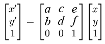
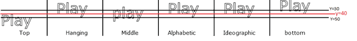
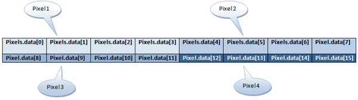

Объявляем, что начинаем новый контур. Это нужно,
если мы хотим задать новый стиль объекту,
который будет нарисован следующим.
// Пример
ctx.lineWidth = 7;
ctx.strokeStyle = "red";
ctx.strokeRect( 50, 50, 100, 100 );
/* Смена стиля */
ctx.beginPath();
ctx.strokeStyle = "green";
ctx.strokeRect( 70, 70, 150, 150 );
/* Смена стиля */
ctx.beginPath();
ctx.strokeStyle = "orange";
ctx.strokeRect( 100, 100, 200, 200 );
Закрыть путь это значит завершить фигуру в начальной точке,
которая была задана методом beginPath().
Канвас попытается начертить прямую линию от текущей точки до начала.
Если фигура уже была закрыта или имеет только одну точку,
то просто ничего не произойдет.
// Синтаксис
void ctx.closePath();
// Пример
ctx.beginPath();
ctx.moveTo( 50, 50 );
ctx.lineTo( 50, 100 );
ctx.lineTo( 100, 100 );
ctx.lineWidth = 1;
ctx.strokeStyle = "rgb( 97, 64, 81 )";
ctx.stroke();
ctx.beginPath();
ctx.moveTo( 100, 100 );
ctx.lineTo( 100, 200 );
ctx.lineTo( 200, 200 );
ctx.closePath();
ctx.lineWidth = 5;
ctx.strokeStyle = "rgb( 64, 97, 80 )";
ctx.stroke();
Сдвигает систему координат канваса на х по горизонтали
и у по вертикали.
void ctx.translate( x, y );
// Пример
ctx.fillStyle = "rgb( 94, 90, 128 )";
ctx.fillRect( 50, 50, 300, 200 );
ctx.translate( 100, 100 );
ctx.fillStyle = "rgb( 44, 40, 78 )";
ctx.fillRect( 50, 50, 300, 200 );
Поворачивает полотно на заданный угол вокруг точки начала координат.
В параметры передаем угол поворота в радианах.
// Синтаксис
void ctx.rotate( angle );
// Пример
// 45 градусов
ctx.rotate( Math.PI / 4 );
ctx.fillStyle = "rgb( 115, 124, 161 )";
ctx.fillRect( 150, 10, 300, 100 );
Применяет нестандартную матрицу преобразования.
// Синтаксис
Чтобы применять этот метод придется вспомнить математику.

void ctx.transform( a, b, c, d, e, f );
// Пример
var sin = Math.sin( Math.PI / 6 );
var cos = Math.cos( Math.PI / 6 );
ctx.translate( 200, 200 );
var c = 0;
for( var i = 0; i <= 12; i++ ) {
c = Math.floor( 255 / 12 * i );
ctx.fillStyle = "rgb(" + c + "," + c + "," + c + ")";
ctx.fillRect( 0, 0, 100, 10 );
ctx.transform( cos, sin, -sin, cos, 0, 0 );
}
ctx.setTransform( -1, 0, 0, 1, 200, 200 );
ctx.fillStyle = "rgba( 255, 128, 255, 0.5 )";
ctx.fillRect() 0, 50, 100, 100 );
{kind=link}
Делает сброс матрицы преобразования к единичной матрице,
а затем вызывается метод transform с параметрами указанными в setTransform.
// Синтаксис
void ctx.setTransform( a, b, c, d, e, f );
// Пример
var rectWidth = 150;
var rectHeight = 75;
// перемещаем контекст к центру холста
ctx.translate( html.canvas.width / 2, html.canvas.height / 2 );
ctx.fillStyle = "rgb( 72, 99, 160 )";
ctx.fillRect( -rectWidth / 2, -rectHeight / 2, rectWidth, rectHeight );
// сбрасываем матрицу трансформаций
// 1 0 0
// 0 1 0
// 0 0 1
// применяем новую трансформацию
ctx.setTransform( 1, 0, 0, 1, 0, 0 );
ctx.fillStyle = "rgb( 99, 161, 72 )";
ctx.fillRect( 0, 0, rectWidth, rectHeight );
Масштабирует единицы измерения холста. В параметры передаем
коэффициенты масштаба по осям X и Y. Это могут быть
любые действительные числа: числа больше 1.0 — увеличиваем масштаб,
меньше 1, но больше 0 — уменьшаем. Значение 1.0 — масштаб остается без изменений.
По умолчанию единица измерения холста равна одному пикселю.
Если мы применим коэффициент 0.5, тогда единица измерения уменьшится вдвое
и соответственно изображение так же уменьшится.
// Синтаксис
void ctx.scale( x, y );
// Пример
Так же допускается использование отрицательных значений,
с помощью которых можно добиться зеркальных отображений. Например,
применив scale( 1; -1 ), получим зеркальное отражение по оси Y.
ctx.fillRect( 150, 10, 300, 100);
// уменьшаем в три раза
ctx.scale( 0.33, 0.33 );
ctx.fillRect( 150, 10, 300, 100);
Очищает прямоугольник с указанными координатами. Отрицательные
координаты не принимаются. В параметры передаем x и y — координаты
левого верхнего угла прямоугольника, который надо очистить, его width
и height.
// Синтаксис
void clearRect( x, y, width, height );
// Пример
ctx.fillRect( 50, 50, 100, 50 );
ctx.strokeRect( 120, 100, 100, 50 );
ctx.clearRect( 100, 70, 50, 50 );
 Как и clearRect() метод Clip() тоже служит для очистки холста. Но здесь
все наоборот - пространство в заданной фигуре останется нетронутым.
Будет очищено все, что снаружи. Сама фигура может быть любой сложности,
и ее нужно нарисовать перед вызовом метода. В примере на картинке очистится все,
кроме того, что внутри звезды.
Как и clearRect() метод Clip() тоже служит для очистки холста. Но здесь
все наоборот - пространство в заданной фигуре останется нетронутым.
Будет очищено все, что снаружи. Сама фигура может быть любой сложности,
и ее нужно нарисовать перед вызовом метода. В примере на картинке очистится все,
кроме того, что внутри звезды.
// Синтаксис
void ctx.clip();БикЮ
// Пример
ctx.arc( 200, 200, 100, 0, 2 * Math.PI, false );
ctx.stroke();
ctx.clip();
ctx.beginPath();
ctx.arc( 100, 100, 150, 0, 2 * Math.PI, false );
ctx.fillStyle = "red";
ctx.fill();
ctx.beginPath();
ctx.arc( 300, 400, 250, 0, 2 * Math.PI, false );
ctx.fillStyle = "green";
ctx.fill();
Перемещаем текущие положение на холсте к координатам ( x, y ).
// Синтаксис
void ctx.moveTo( x, y );
// Пример
ctx.moveTo( 50, 50 );
ctx.lineTo( 50, 100 );
ctx.lineTo( 100, 100 );
ctx.stroke();
"Рисует" прямую линию от текущего положения на холсте до точки ( x, y ).
По этим координатам так же будет новое текущее положение на холсте.
// Синтаксис
Цвет линии определяется свойством strokeStyle, толщина — lineWidth. Чтобы увидеть
нарисованную линию, нужно воспольщоваться методом stroke();
ctx.lineTo( x, y );
// Пример
ctx.beginPath();
ctx.moveTo( 50, 50 );
ctx.lineTo( 50, 100 );
ctx.lineTo( 100, 100 );
ctx.stroke();
Делает нарисованные контуры видимыми.
// Синтаксис
void ctx.stroke();
// Пример
ctx.moveTo( 50, 50 );
ctx.lineTo( 50, 100 );
ctx.lineTo( 100, 100 );
ctx.stroke();
Ширина линии. По умолчанию 1.0.
Дробные, отрицательные значения и ноль игнорируются.
// Синтаксис
ctx.lineWidth = value;
// Пример
ctx.moveTo( 100, 150 );
ctx.lineTo( 450, 50 );
ctx.lineWidth = 15;
ctx.stroke();
Стиль окончания линии. По умолчанию 'butt'.
// Синтаксис
При использовании значений round или squre, фактическая длина линии увеличивается на значение lineWidth ( с двух сторон лини добавляются отрезки длинной lineWidth / 2 ).
ctx.lineCap = "butt";
ctx.lineCap = "round";
ctx.lineCap = "square";
var lineCap = [ 'butt', 'round', 'square' ];
// Направляющие
ctx.strokeStyle = '#09f';
ctx.beginPath();
ctx.moveTo( 100, 100 );
ctx.lineTo( 300, 100 );
ctx.moveTo( 100, 300 );
ctx.lineTo( 300, 300 );
ctx.stroke();
// Линии
ctx.strokeStyle = 'black';
for ( var i = 0; i < lineCap.length; i++ ) {
ctx.lineWidth = 15;
ctx.lineCap = lineCap[ i ];
ctx.beginPath();
ctx.moveTo( 125 + i * 75, 100 );
ctx.lineTo( 125 + i * 75, 300 );
ctx.stroke();
}
Стиль соединения линий. Доступны три значения: miter ( по умолчанию),
round, bevel. Можно настроить длину соединения - miter limit ratio.
Значение может быть задано атрибутом miterLimit ( 10.0 - по умолчанию ).
// Синтаксис
ctx.lineJoin = "bevel";
ctx.lineJoin = "round";
ctx.lineJoin = "miter";
ctx.miterLimit = 5.2;
// Пример
// miter
ctx.beginPath();
ctx.moveTo( html.canvas.width / 2 - 50 - 140, html.canvas.height - 50 );
ctx.lineTo( html.canvas.width / 2 - 140, 50 );
ctx.lineTo( html.canvas.width / 2 + 50 - 140, html.canvas.height - 50 );
ctx.lineWidth = 25;
ctx.lineJoin = "miter";
ctx.stroke();
// round
ctx.beginPath();
ctx.moveTo( html.canvas.width / 2 - 50, html.canvas.height - 50 );
ctx.lineTo( html.canvas.width / 2, 50 );
ctx.lineTo( html.canvas.width / 2 + 50, html.canvas.height - 50 );
ctx.lineWidth = 25;
ctx.lineJoin = "round";
ctx.stroke();
// bevel
ctx.beginPath();
ctx.moveTo( html.canvas.width / 2 - 50 + 140, html.canvas.height - 50 );
ctx.lineTo( html.canvas.width / 2 + 140, 50 );
ctx.lineTo( html.canvas.width / 2 + 50 + 140, html.canvas.height - 50 );
ctx.lineWidth = 25;
ctx.lineJoin = "bevel";
ctx.stroke();
При соединении линий с опцией miter, концы линий продлеваются на определенное расстояние чтобы соединиться. Это расстояние будет небольшим для больших углов и в разы больше для острых.
Свойство miterLimit задает максимально допустимое расстояние для "дорисовки". Если для соединения линий требуется большее расстояние, тогда они будут соединены как bevel.
// Синтаксис
Значение — число не менее 1.0 ( значение меньше будет восприниматься как 1.0 ). По умолчанию
miterLimit = 10.0. Значение 1.0 означает отсутствие удлинения.
ctx.miterLimit [ =value ];
// Пример
ctx.miterLimin = 5.2;
ctx.moveTo( 20, 10 );
ctx.lineTo( 30, 30 );
ctx.lineTo( 40, 40 );
ctx.stroke();
Свойство lineJoin определяет как будут соединяться
сегменты линий ( дуг или кривых Безье ) длиной больше
нуля, в месте их соединения.
Это свойство не работает с заполненными фигурами.
// Синтаксис
ctx.lineJoin = "bevel";
ctx.lineJoin = "round";
ctx.lineJoin = "miter";
// Синтаксис
ctx.lineWidth = 20;
ctx.lineJoin = "round";
ctx.strokeRect( 100, 100, 100, 100 );
Определяет цвет линий. Значение — имя цвета, или
шестнадцатиричный код, или rgb / rgba. Можно градиент или паттерн ( картинку ). По умолчанию - черный.
// Синтаксис
ctx.strokeStyle = color;
ctx.strokeStyle = gradient;
ctx.strokeStyle = pattern;
// Пример
ctx.lineWidth = 7;
ctx.strokeStyle = "rgb( 134, 72, 161 )";
ctx.moveTo( 50, 50 );
ctx.lineTo( 250, 250 );
ctx.stroke();
Здесь просто выводим в консоль код, который рисует прямую линию, чтобы было меньше писать ручками.
 Рисует дугу вдоль окружности с центром в позиции ( x, y ) радиусом ( r ).
Дуга начинается в startAngle и заканчивается в endAngle ( в радианах ).
Необязательный параметр antiClockwise — направление соединения точек
начала и конца дуги. По умолчанию - false — направление
по часовой стрелке. Значение true — против часовой.
Рисует дугу вдоль окружности с центром в позиции ( x, y ) радиусом ( r ).
Дуга начинается в startAngle и заканчивается в endAngle ( в радианах ).
Необязательный параметр antiClockwise — направление соединения точек
начала и конца дуги. По умолчанию - false — направление
по часовой стрелке. Значение true — против часовой.
// Синтаксис
void ctx.arc( x, y, radius, startAngle, endAngle, anticlockwise );
// Пример
ctx.lineWidth = 5;
ctx.strokeStyle = "rgb( 237, 179, 43 )";
ctx.arc( 100, 30, 50, 0.2 * Math.PI, 1.1 * Math.PI );
ctx.stroke();
 Рисует кривую Безье от текущей точки на холсте до указанной через промежуточные (
контрольные ) точки. Дуга отобразится после вызова метода stroke(). Цвет дуги определяет свойство strokeStyle, толщину линии — lineWidth. Текущее положение на холсте переместится в конец кривой.
Если нужно передвинуть начало кривой, можно воспользоваться методом
ctx.moveTo(), который нужно вызвать перед созданием кривой.
Контрольных точек может быть сколько угодно, и задаются они
координатами в параметрах ( controlX, controlY, ... , control-10-X, control-10-Y ). endX,
endY — координаты окончания кривой. Требуются как минимум три точки - первые две, чтобы
задать направление и третья, чтобы закончить кривую.
Рисует кривую Безье от текущей точки на холсте до указанной через промежуточные (
контрольные ) точки. Дуга отобразится после вызова метода stroke(). Цвет дуги определяет свойство strokeStyle, толщину линии — lineWidth. Текущее положение на холсте переместится в конец кривой.
Если нужно передвинуть начало кривой, можно воспользоваться методом
ctx.moveTo(), который нужно вызвать перед созданием кривой.
Контрольных точек может быть сколько угодно, и задаются они
координатами в параметрах ( controlX, controlY, ... , control-10-X, control-10-Y ). endX,
endY — координаты окончания кривой. Требуются как минимум три точки - первые две, чтобы
задать направление и третья, чтобы закончить кривую.
// Синтаксис
void bezierCurveTo( control-1-X, control-1-Y, control-2-X, control-2-Y, endX, endY );
// Пример
ctx.moveTo( 50, 20 );
ctx.lineWidth = 10;
ctx.strokeStyle = "red";
ctx.bezierCurveTo( 75, 37, 70, 25, 50, 25 );
ctx.bezierCurveTo( 20, 25, 20, 62.5, 20, 62.5 );
ctx.bezierCurveTo( 20, 80, 40, 102, 75, 120 );
ctx.bezierCurveTo( 110, 102, 130, 80, 130, 62.5 );
ctx.bezierCurveTo( 130, 62.5, 130, 25, 100, 25 );
ctx.bezierCurveTo( 85, 25, 75, 37, 75, 40 );
ctx.stroke();
// Еще один
ctx.lineWidth = 7;
ctx.moveTo( 75, 25 );
ctx.strokeStyle = "darkslategray";
ctx.quadraticCurveTo( 25, 25, 25, 62.5 );
ctx.quadraticCurveTo( 25, 100, 50, 100 );
ctx.quadraticCurveTo( 50, 120, 30, 125 );
ctx.quadraticCurveTo( 60, 120, 65, 100 );
ctx.quadraticCurveTo( 125, 100, 125, 62.5 );
ctx.quadraticCurveTo( 125, 25, 75, 25 );
ctx.stroke();
Задает цвет тени. Значением может быть имя цвета,
шестнадцатеричный код, rba / rgba представление.
// Синтаксис
ctx.shadowColor = color;
// Пример
ctx.shadowOffsetX = 4;
ctx.shadowOffsetY = 4;
ctx.shadowBlur = 4;
ctx.shadowColor = "rgba( 128, 0, 0, 0.5 )";
ctx.fillStyle = "rgb( 0, 128, 128 )";
ctx.fillRect( 50, 50, 200, 100 );
Задает смещение тени относительно объекта по оси X или Y в пикселах.
По умолчанию смещение равно 0. Положительные значения смещают тень вправо,
отрицательные — влево.
// Синтаксис
ctx.shadowOffsetX [ = value ]
ctx.shadowOffsetY [ = value ]
// Пример
ctx.shadowOffsetX = 4;
ctx.shadowOffsetY = 4;
ctx.shadowBlur = 4;
ctx.shadowColor = "rgba( 26, 0, 140, 0.6 )";
ctx.fillStyle = "rgb( 114, 140, 0 )";
ctx.fillRect( 50, 50, 200, 100 );
Задает размер размытия тени.
Значение по умолчанию равно 0.
// Синтаксис
ctx.shadowBlur [ = value ];
// Пример
ctx.shadowOffsetX = 6;
ctx.shadowOffsetY = 6;
ctx.shadowBlur = 8;
ctx.shadowColor = "rgba( 23, 66, 235, 0.5 )";
ctx.fillStyle = "rgb( 235, 192, 23 )";
ctx.fillRect( 50, 50, 200, 100 );
Определяет цвет заливки внутри фигуры. По умолчанию - черный. Значение — имя цвета, или
шестнадцатиричный код, или rgb/ rgba. Если не задавать значение, тогда будет происходить
чтение свойства.
// Синтаксис
Кроме этого фигуры можно заливать градиентами или изображениями, естественно,
сохданными предварительно.
ctx.createLinearGradient( x0, y0, x1, y1 );
// Синтаксис
ctx.fillStyle = color;
ctx.fillStyle = gradient;
ctx.fillStyle = pattern;
// Пример
ctx.fillStyle = "rgb( 237, 120, 57 )";
ctx.fillRect( 100, 100, 150, 150 );
Определяет уровень прозрачности.
// Синтаксис
Значение — число в диапазоне от 0 до 1.0 ( 0 — абсолютно прозрачно ).
По умолчанию значение равно 1.
Если не задавать значение, тогда будет происходить чтение свойства.
globalAlpha [ =value ]
// Пример
ctx.beginPath();
ctx.fillStyle = "rgb( 226, 167, 111 )";
ctx.fillRect( 50, 50, 100, 50 );
ctx.beginPath();
ctx.globalAlpha = 0.5;
ctx.fillStyle = "rgb( 111, 171, 227)";
ctx.arc( 100, 120, 50, 0,2 * Math.PI, false );
ctx.fill();
Создает объект линейного градиента. В параметры передаем координаты
начальной и конечной точек. В метод addColor кроме цвета нужно передать
положение цвета. Значение - положительное число от 0 до 1.
// Синтаксис
После создания объекта градиента, можно ему присвоить любое количество цветов с помощью метода addColorStop. Градиент появится на холсте после применения метода fill() или stroke().
ctx.createLinearGradient( x0, y0, x1, y1 );
Создает объект радиального градиента, полученный при помощи двух
окружностей, с координатами, переданными в параметры. x0, y0, r1 -
координаты центра и радиус первой окружности, x1, y1, r2 - аналогично
для второй. Если нужно, можно добавить цвета при помощи addColor().
Градиент появится на холсте после применения метода fill() или stroke().
// Синтаксис
ctx.createLinearGradient( x0, y0, r1, x1, y1, r2 );
Добавляет стоп цвет объекту градиента. Можно использовать как с линейным,
так и с радиальным градиентами. Принимает в параметры позицию градиента
( от 0.0 до 0.1) и цвет ( название, код цвета или его rgb/rgba представление.
Стоп-цветов может быть сколько угодно.
// Пример
var linearGradient = ctx.createLinearGradient( 50, 50, 150, 250 );
linearGradient.addColorStop( 0, "green" );
linearGradient.addColorStop( 0.5, "blue" );
linearGradient.addColorStop( 1, "yellow" );
ctx.strokeStyle = linearGradient;
ctx.moveTo( 50, 50 );
ctx.lineTo( 150, 250 );
ctx.stroke();
Делает заливку фигуры. Цвет заливки сохраняем в свойство
fillStyle. При вызове метода fill() все открытые фигуры будут закрыты автоматически,
поэтому в таком случае можно не вызывать метод closePath().
// Пример
ctx.fillStyle = "rgb( 115, 140, 0 )";
ctx.arc( 100, 120, 50, 0, 2 * Math.PI, false );
ctx.fill();
Рисует залитый прямоугольник. Цвет будет тот, который определен
в свойстве fillStyle или черный по умолчанию. В параметрах -
координаты верхнего левого угла прямоугольника и его размеры.
// Синтаксис
Кроме этого, этот метод часто используется для быстрой очистки
поверхности холста с сохранением всех настроек контекста.
Это можно сделать, например, так:
fillRect( x, y, width, height );
// Пример
ctx.fillStyle = "rgb( 177, 251, 23 )";
ctx.fillRect( 0, 0, html.canvas.width, html.canvas.height );
Эта кнопка просто рисует круг при помощи метода arc().
Рисует контур прямоугольника, определенный свойством strokeStyle.
Левый верхний угол прямоугольника в точке ( x, y ).
Размеры - width x height.
// Синтаксис
Все параметры обязательны и должны быть положительными числами.
void ctx.strokeRect( x, y, width, height );
// Пример
ctx.fillRect( 50, 50, 100, 50 );
ctx.strokeRect( 120, 100, 100, 50 );
ctx.clearRect( 100, 70, 50, 50 );
Определяет как будут себя вести перекрывающиеся фигуры.
// Синтаксис
На место type нужно подставить одно из зарезервированных значений:
void ctx.globalCompositeOperation = type;
- source-over ( по умолчанию ) — новое изображение рисуется поверх старого
- destination-over — новые фигуры рисуются под уже нарисованными
- source-in — отображается только та часть, где фигуры накладываются одна на другую. Сверху новое изображение
- destination-in — отображается только та часть изображения, где фигуры накладываются одна на другую. Сверху старое изображение
- source-out — отображается только та часть нового изображения, которая не пересекается с другими фигурами
- destination-out — отображается только та часть предшествующего изображения, которая не пересекается с другими фигурами
- source-atop — у нового изображения отображается только та часть, которая пересекается с предшествующими фигурами
- destination-atop — у предшествующего изображения отображается (поверх) только та часть, которая пересекается с новой фигурой.
- lighter — место пересечения фигур изменяет цвет на тот, которые получается путем сложения цветов пересекающихся фигур.
- darker — место пересечения фигур изменяет цвет на тот, которые получается путем вычитания цветов пересекающихся фигур.
- xor — место пересечения фигур прозрачно.
- copy — отображается только новая фигура, все остальное удаляется.
// Пример
ctx.globalCompositeOperation = "xor";
ctx.fillStyle = "rgb( 193, 27, 23 )";
ctx.fillRect(10, 10, 100, 100);
ctx.fillStyle = "rgb( 23, 191, 194 )";
ctx.fillRect(50, 50, 100, 100);
Определяет свойства шрифта. Значение — перечень свойств шрифта
аналогично синтаксису в CSS.
// Синтаксис
void ctx.font[ =value ];
// Пример
ctx.font = "italic bold 32px Tahoma";
ctx.textBaseline = "Top";
ctx.textAligne = "center";
ctx.fillStyle = "rgb( 38, 51, 74 )";
ctx.textAligne = "center";
ctx.strokeText( "Hello world", 20, 100 );
Рисуем текст, левый верхний угол которого находится
в позиции ( x, y ), залитый цветом, определенным в fillStyle.
Параметр maxWidth - опциональный. Если его указать,
то текст масштабирается, чтобы соответствовать указанной ширине.
// Синтаксис
void ctx.fillText( text, x, y [, maxWidth ] );
// Пример
ctx.font = "48px serif";
ctx.fillStyle = "rgb( 73, 61, 38 )";
ctx.fillText( "Hello world", 20, 100 );
Рисуем контур текста цветом, определенным strokeStyle.
Верхний левый угол - в похиции ( x, y ). Четвертый параметр -
опциональный - это ширина, до которой должен масштабироваться
написованный текст.
// Синтаксис
void ctx.strokeText( text, x, y [, maxWidth ] );
// Пример
ctx.font = "normal normal 32px Tahoma";
ctx.strokeStyle = "red";
ctx.strokeText( "Учим canvas", 300, 200 );
Определяет выравнивание текста.
// Синтаксис
Значение — один из следующих вариантов:
- start — (по умолчанию)по правому краю;
void ctx.textAlign[ =value ];
- end — по правому краю.
- left — по левому краю;
- right — по правому краю;
- center — по центру;
// Пример
Выравнивание происходит относительно указанных координат
начала текста. Значение start / left и right / end совпадут
когда у нас направление текста ltr. И наоборот, start /
right и left / end совпадут для rtl.
ctx.font = "48px serif";
ctx.textAlign = 'right';
ctx.fillStyle = "rgb( 246, 96, 171 )";
ctx.fillText( "London is the capital of Great Britain", 800, 100 );
Возвращает / устанавливает выравнивание базовой линии.
// Синтаксис
Значение — один из следующих вариантов: top, hanging, middle,
alphabetic ( по умолчанию ), ideographic, bottom.

ctx.textBaseline[ =value ];
// Пример
Для работы с латиницей достаточно значений top, middle, bottom. Остальные — более тонкая настройка для остальных символов юникода.
ctx.font = "48px serif";
ctx.textBaseline = 'top';
ctx.fillStyle = "rgb( 246, 96, 171 )";
ctx.fillText( "Play Canvas", 50, 100 );
{kind=link}
Выводит изображение на хосте. Делает это по-разному.
В простейшем варианте просто отобразит картинку.
// Синтаксис
В параметры передаем предварительно созданный JS объект изображения
и координаты холста, где должен быть верхний левый угол картинки. Будут
сохранены реальные размеры.
Второй способ - аналогично, но с изменением размера изображения. Соответственно
параметров должно быть немного больше. К первоначальному комплекту добавляем
желаемые размеры изображения. Понятно, что качество картинки при этом может
несколько пострадать.
ctx.drawImage( image, x, y );
// Синтаксис
Кроме этого есть возможность вывести кусок изображения. К параметрам добавляем
sx, sy — координаты верхнего левого угла вырезаемого слайса. sWidth, sHeight - его
размеры. dx, dy — координаты верхнего левого угла обрезанного изображения и
dWidth, dHeight — размеры обрезанного изображения на холсте.
ctx.drawImage( image, x, y, width, height );
// Синтаксис
ctx.drawImage( image, sx, sy, sWidth, sHeight, dx, dy, dWidth, dHeight );

 В примере внизу я влепила таймер, потому что при создании
картинки канвасу нужно немного времени на ее создание.
Если вы будете подгружать свое изображение, возможно
придется увеличить задержку. Здесь всего лишь иконка.
Естественно, можно использовать любой другой способ,
который задержит процесс. Например, в нашем случае -
одной кнопкой создавать картинку, а другой рисовать ее на
холсте. Если вам так больше нравится, можете изменить код,
а я подумала, что кнопок здесь и так... хватает...
В примере внизу я влепила таймер, потому что при создании
картинки канвасу нужно немного времени на ее создание.
Если вы будете подгружать свое изображение, возможно
придется увеличить задержку. Здесь всего лишь иконка.
Естественно, можно использовать любой другой способ,
который задержит процесс. Например, в нашем случае -
одной кнопкой создавать картинку, а другой рисовать ее на
холсте. Если вам так больше нравится, можете изменить код,
а я подумала, что кнопок здесь и так... хватает...
// Пример
Будет немного понятнее, если посмотреть на картинку. Спецификация позволяет любые
изображения - это может быть обычная картинка, картинка созданная при помощи методов
из Canvas Api, ImageBitmap HTMLImageElement или вообще видео. Насчет видео - есть нюанс.
Оно не будет проигрываться в Канвасе. На холсте будет зафиксирован один отдельный кадр.
Чтобы видео пошло, нужно будет собрать эти кадры, например, в массив и как-нибудь
показывать их по очереди. Вероятно, это будет довольно странным решением с точки зрения
производительности, несмотря на то, что холст довольно быстр...
var image = new Image();
image.src="app/img/present.png";
setTimeout( function() {;
ctx.drawImage( image, 10, 50, 50, 50 );
}, 15 );
Создает объект imageData. В width и height передаем
размеры создаваемого объекта. В результате получим объект
imageData с RGBA = ( 0, 0, 0, 0 ) и размером width x height.
// Синтаксис
Второй способ позволяет передать в параметры уже существующий
объект OldImageData, который был получен с помощью getImageData
или созданный с помощью createImageData. Таким образом можно
получить новый объект изображения, полностью идентичный OldImageData.
Цвета можно установить при помощи свойства data, где i — позиция в массиве,
и value — значение для данного канала RGBA (число от 0 до 255):
ctx.createImageData( width, height );
// или
createImageData( OldImageData );
// Синтаксис
imageData.data[ i ] = value;
Пример уже в консоли. Слишком уж нестандартно.
Метод возвращает данные о цвете ( RGB ) и прозрачности указанного участка холста. При этом, будут возвращены значения цвета, которые фактически видит пользователь, а не те, которые определены в fillStyle/ strokeStyle.
// Синтаксис
Первые два параметра ( sx, sy ) - координаты верхнего левого угла участка,
оставшиеся - ( sw, sh ) - его ширина и высота. Значения вернутся в виде массива.
ctx.getImageData( sx, sy, sw, sh );
Например, получим данные участка размером в 1px:
// Пример
Получим такой результат:
var imageData = ctx.getImageData( 10, 10, 1, 1 );
// Пример
Для участка размером, напрмер, 2px:
imageData.data[ 0 ] // значение красного цвета ( число от 0 до 255 );
imageData.data[ 1 ] // значение зеленого цвета ( число от 0 до 255 );
imageData.data[ 2 ] // значение синего цвета ( число от 0 до 255 );
imageData.data[ 3 ] // значение прозрачности ( число от 0 до 255 );
// Пример

Массив будет уже большего размера: 4x2x2
( 2x2 — 4 пикселя на каждый из которых 4 значения )
var imageData = ctx.getImageData( 10, 10, 2, 2 );
Кроме этого, следует помнить, что getImageData является ресурсоемкой операцией, по возможности следует ее избегать.
{kind=link}
Помещает на холст объект imageData ( содержит RGBA информацию ).
// Синтаксис
ImageData — объект, созданный с помощью метода createImageData()
или полученный с помощью getImageData().
x и y — координаты левого верхнего угла объекта относительно холста;
dX, dY — координаты левого верхнего угла относительно изображения в imageData,
от которого будут рассчитываться размеры изображения;
dWidth, dHeight — размеры размещаемого объекта ( обрезается часть изображения,
которая не вмещается в эти размеры ).
ctx.putImageData( imageData, x, y [, dX, dY, dWidth, dHeight ] );
// Пример
ctx.fillStyle = "red";
ctx.fillRect( 10, 10, 100, 40 );
ctx.fillStyle = "green";
ctx.globalAlpha = "0.5";
ctx.fillRect( 90, 30, 50, 50 );
var Pixel1 = ctx.getImageData( 10, 10, 140, 80 );
// отображаем только зеленый квадрат
ctx.putImageData( Pixel1, 200, 200, 80, 20, 50, 50 );
При помощи метода createPattern() можно размножить изображение.
В параметры передаем объект Image() и способ, которым хотить замостить канвас.
Возможные значения: repeat, repeat-x, repeat-y и no-repeat. Пустая строка будет
означать "repeat". Результат появится на холсте после применения метода fill() или stroke().
Перед применением метода следует убедиться, что изображение загружено. Так бывает далеко не
всегда, поэтому или таймаут или выполнение двумя разными командами.
// Синтаксис
ctx.createPattern( image, type );
Сохраняет в data url изображение нарисованное на холсте.
Результатом будет url PNG изображения закодированного в data url.
// Синтаксис
ctx.canvas.toDataURL();
Создает круг с заданным радиусом. Если радиус равер 0, то он будет случайным
Контекст - содержит настройки рисования.
Метод save() сохраняет копию текущего состояния контекста
на вершину стека состояния. Сохраняются
примененные трансформации, strokeStyle, fillStyle, globalAlpha, lineWidth,
lineCap, lineJoin, miterLimit, shadowOffsetX, shadowOffsetY, shadowBlur, shadowColor,
globalCompositeOperation и контуры отсечения.
Потом его можно оттуда восстановить, воспользовавшись ctx.restore().
// Пример
void ctx.save();
void ctx.restore();
ctx.fillRect( 50, 50, 30, 20 );
ctx.fillStyle = "green";
ctx.save();
ctx.fillRect( 80, 50, 30, 20 );
ctx.fillStyle = "blue";
ctx.fillRect( 110, 50, 30, 20 );
ctx.restore();
ctx.fillRect( 140, 50, 30, 20 );
ctx.restore();
ctx.fillRect( 170, 50, 30, 20 );
Восстанавливаем из стека верхнее состояние контекста. Восстанавливаются
примененные трансформации, strokeStyle, fillStyle, globalAlpha, lineWidth,
lineCap, lineJoin, miterLimit, shadowOffsetX, shadowOffsetY, shadowBlur, shadowColor,
globalCompositeOperation и контуры отсечения.
Если мы предварительно не сделали ctx.save(), ничего не восстановится.
// Синтаксис
void ctx.save();
void ctx.restore();
ctx.fillRect( 50, 50, 30, 20 );
ctx.fillStyle = "green";
ctx.save();
ctx.fillRect( 80, 50, 30, 20 );
ctx.fillStyle = "blue";
ctx.fillRect( 110, 50, 30, 20 );
ctx.restore();
ctx.fillRect( 140, 50, 30, 20 );
ctx.restore();
ctx.fillRect( 170, 50, 30, 20 );
Здесь всего лишь запустился метод clearRect(), который
очищает прямоугольник размером с целый холст. Я вынесла его
сюда просто для удобства экспериментов. В примере кода внизу
код, который реально выполняется при нажатии на эту кнопку.
Если вы хотите поиграться с ним самостоятельно, то нужная для
этого кнопка есть в разделе "Опции рисования". Там все как обычно.
...или можно просто скопировать в консоль код из примера.
// Синтаксис
void clearRect( 0, 0, html.canvas.width, html.canvas.height );
Сохраняем содержимое холста. Это можно сделать
несколькими способами.
// В data url изображение целиком
Кроме этого, можно сохранить последовательность действий,
выполняемых при рисовании.
canvas.toDataURL( 'image/jpeg' );
// Массив пикселей. В параметрах координаты и размер изображения.
ctx.getImageData( x, y, width, height );
Canvas Panel
Щелкните правой кнопкой мыши для сохранения ...
Code Panel